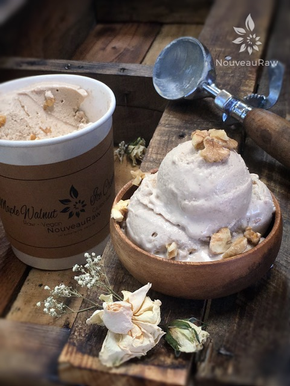
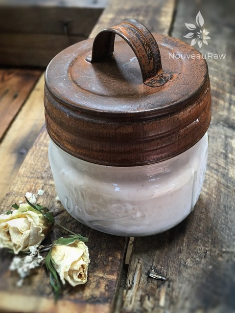
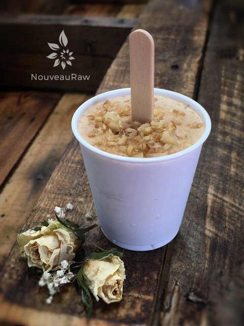
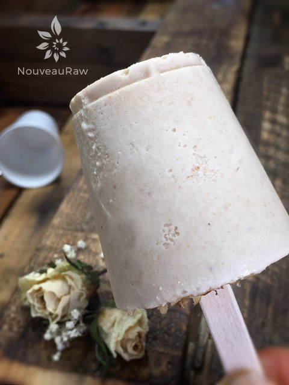

Maple Walnut Ice Cream
~ raw, vegan, gluten-free ~
Aah raw Maple Walnut Ice Cream! I have wanted to dabble with raw ice cream for some time now, and I finally did it! This recipe tastes wonderful. This is one of those “bowl licking” recipes!
Back when I was 16 yrs old, I spent the weekend with my girlfriend and her family. That weekend we had a movie night.
My girlfriend and I had our “beds” made up on the living room floor as the family lounged around in the surrounding couches and chairs. During the movie, we had an ice cream treat.
I remember it being vanilla ice cream topped with Hersey’s chocolate. It was so good that I just had to lick the bowl clean and just as I was doing so, my face buried in the bowl, out of the corner of my eye I spotted everyone looking at me. I pulled my head out of the bowl, and everyone just sat there staring at me, then they all started laughing. I was rather perplexed as to what was so darn funny.
Years later and apparently even to this very day, her family still talks and laughs about me licking my bowl clean. It seems this was a new thing to them and they had never seen such a thing. Leave no-calorie behind I say!
Don’t worry if you don’t have an ice cream maker. You can make this batter and freeze it in ice-cube trays, then whip it up like soft-serve ice cream, just place the cubes in your blender. If you do have an ice cream maker, place the batter in your machine and process according to your ice cream machine’s instructions. I was shocked as to how easy it is to make. I can’t wait to start experimenting with all sorts of flavor combinations! This recipe is gluten-free, organic, and dairy-free! I hope you enjoy this recipe. Many blessings, amie sue
Serves 8
- 2 cups raw walnuts, soaked
- 1 cup raw cashews, soaked
- 2 1/4 cups water
- 1 cup pure maple syrup or desired sweetener
- 1/4 tsp maple extract
- 1/8 tsp Himalayan pink salt
- 1/2 cup chopped walnuts (reserved to crush and stir in towards the end)
Preparation:
- In a high-speed blender, combine the walnuts, cashews, water, sweetener, maple extract, and salt. Blend until nice and creamy.
- Due to the volume and the creamy texture that we are going after, it is important to use a high-powered blender. It could be too taxing on a lower-end model.
- Blend until the filling is creamy smooth. You shouldn’t detect any grit. If you do, keep blending.
- This process can take 2-4 minutes, depending on the strength of the blender. Keep your hand cupped around the base of the blender carafe to feel for warmth. If the batter is getting too warm. Stop the machine and let it cool. Then proceed once cooled.
- Place the blender carafe in the fridge or freezer for 1 hour.
- If chilled in the fridge it can stay there for up to 8 hours. But don’t leave it in the freezer for more than an hour or it will freeze solid.
- Once chilled pour the batter into the ice cream maker and follow the manufacturer’s instructions.
- When the machine is near done, add the chopped walnuts and mix until they are incorporated.
- Place in a freezer-safe container(s) and freeze. It is delicious right out of the machine too!
- It is best to take the ice cream out of the freezer about 10 minutes ahead of time, so it can have a chance to soften.
- Eat within 1 month.
Freezing Suggestions for Ice Cream:
-
Use an ice cream machine. Follow the manufactures directions.
-
Freeze in popsicle molds or 3 oz Dixie cups with a popsicle stick inserted.
-
-
Store the ice cream in the very back of the freezer, as far away from the door as possible. Every time you open your freezer door you let in warm air. Keeping ice cream way in the back and storing it beneath other frozen-sold items will help protect it from those steamy incursions.
-
Ice cream is full of fat, and even when frozen, fat has a way of soaking up flavors from the air around it—including those in your freezer. To keep your ice cream from taking on the odors, use a container with a tight-fitting lid. For extra security, place a layer of plastic wrap between your ice cream and the lid.
-
To soften in the refrigerator, transfer ice cream from the freezer to the refrigerator 20-30 minutes before using. Or let it stand at room temperature for 10-15 minutes.
-
Wish to make your own raw ice cream, wonder what machine I might recommend, and more? Click (
here) to check out the Reference Library!


Another great way to store the ice cream is in single serving jars. Perfect for portion control!

Good ole Dixie pops. I usually make a handful of these up out of every ice cream batch that I made. They are 3 oz plastic Dixie cups. Perfect for young ones on warm summer days.

© AmieSue.com